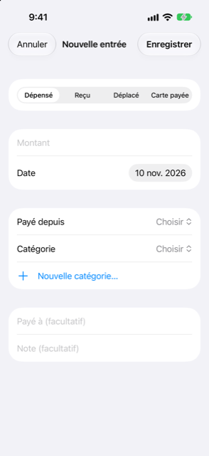

Guide › Enregistrer l’argent
Remplir un formulaire
Enregistrez une dépense, un revenu ou un transfert avec le formulaire.
Le formulaire enregistre une seule chose qui s'est produite : de l'argent dépensé, de l'argent reçu, un déplacement entre vos propres comptes, ou une facture de carte payée depuis un compte bancaire. Utilisez-le quand vous voulez vérifier chaque champ vous-même, ou pour finir quelque chose que Damla a lu mais n'a pas pu compléter seul.

Quand l'utiliser
- Vous voulez enregistrer quelque chose à la main, champ par champ.
- Damla a lu une phrase ou un message mais il manquait quelque chose : Complétez-le ouvre ce formulaire avec ce qui a été compris déjà rempli.
- Un élément de la boîte de réception attend d'être complété.
- Vous voulez changer ou corriger quelque chose que vous avez enregistré plus tôt.
Pas à pas
- Touchez le bouton plus sur Aujourd'hui ou Activité.
- Touchez Remplir un formulaire. L'écran Nouvelle saisie s'ouvre.
- En haut, choisissez le type. Les quatre types sont Dépensé, Reçu, Déplacé et Carte payée.
- Tapez le montant et réglez la date.
- Choisissez les comptes, et une catégorie pour une dépense ou un revenu :
- Dépensé : choisissez Payé depuis - une banque, une épargne, un portefeuille ou un compte carte - et une catégorie. - Reçu : choisissez une catégorie et le compte où l'argent va Vers. - Déplacé : choisissez De et À. La liste contient vos comptes banque, épargne et portefeuille et des personnes. Ils ne peuvent pas être le même compte. - Carte payée : choisissez Payé depuis - une banque, une épargne ou un portefeuille - et la Carte.
- Pour Dépensé ou Reçu, vous pouvez ajouter à qui vous avez payé ou qui vous a payé (« Payé à (facultatif) » ou « De la part de (facultatif) ») et une note.
- Touchez Enregistrer.
Si c'était dans une autre devise
Pour Dépensé ou Reçu, une fois le compte choisi, le formulaire affiche une section Payé dans une autre devise. Si le marchand a débité une devise autre que celle du compte, choisissez-la sous Débité en et tapez le Montant débité. Damla propose alors Utiliser l'estimation : … - le montant calculé à partir du dernier taux de change et de la majoration de la banque (réglée dans Réglages). Un chiffre que vous tapez vous-même remplace l'estimation. S'il n'y a pas encore de taux de change pour cette devise, tapez ce qui a été facturé sur la carte : c'est sur le relevé ou dans l'appli de la banque.
Pour Déplacé entre deux comptes dans des devises différentes, une section Reçu apparaît : tapez le Montant reçu dans la devise du compte qui reçoit.
Modifier ce que vous avez enregistré
- Ouvrez Activité et touchez la transaction. Le même formulaire s'ouvre, intitulé Modifier la saisie. (Une transaction déjà répartie ouvre la feuille de répartition à la place.)
- Changez ce qu'il faut et touchez Enregistrer. Pour la retirer, balayez la transaction dans la liste Activité pour la supprimer.
Après avoir enregistré une transaction avec une catégorie, Damla retient que la boutique ou la personne y appartient, si bien que la prochaine alerte d'elle est classée dans cette catégorie toute seule. Si des transactions antérieures de la même boutique sont dans une autre catégorie, Damla demande s'il faut les changer aussi : Les changer en … ou Seulement celle-ci. La catégorie de repli Autre n'est pas retenue.
Bon à savoir
- Changer le type après avoir choisi des comptes les efface ; choisissez donc le type d'abord.
- Sous le sélecteur de catégorie, touchez Nouvelle catégorie… pour en créer une sur place ; elle est sélectionnée aussitôt.
- La feuille de nouvelle catégorie suggère une icône d'après le nom - salle de sport, animaux, enfants, assurance, réparations et bien d'autres en ont une intégrée - et vous laisse choisir la vôtre dans une grille. L'icône s'affiche dans Activité.
- La même feuille s'ouvre depuis Réglages, Catégories, où vous pouvez aussi renommer ou retirer des catégories plus tard.
- Si vous complétez une alerte bancaire à propos d'une carte ou d'un compte que Damla ne connaissait pas encore, choisir le compte dans le formulaire lui apprend ces derniers chiffres : la prochaine alerte de lui ne pose plus de question.
- Un montant qui n'a été qu'estimé à partir d'un taux est gardé comme estimation ; le relevé le remplace par le montant que la banque a vraiment facturé. Tapez le chiffre réel quand vous le connaissez.
À voir aussi
Quelque chose n’est pas clair ou manque ? Écrivez à support@raveniq.ai en indiquant la page.